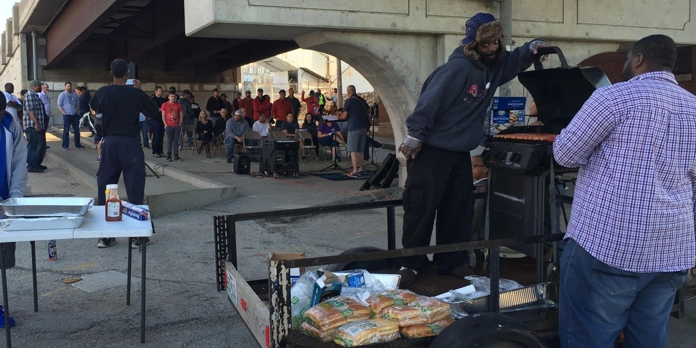
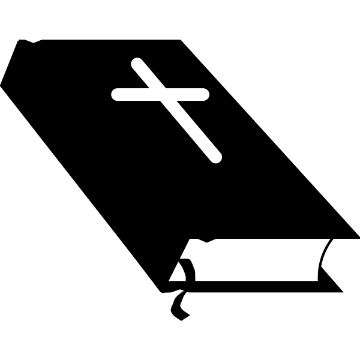

Worship Music
Services include both contemporary and traditional Christian music selections. Worship leaders from local churches volunteer their time and talent to make sure we have worship music at every service.

"No walls and no pews ... bringing church to the streets of Kansas City"
The Worship Wagon is a mobile church service offered to the poor and homeless population in the downtown Kansas City, Missouri area. Our program provides a unique opportunity for those living on the streets to participate in a weekly, non-denominational church service each Monday night. All are welcome, and everyone is encouraged to come as they are.
Services include both contemporary and traditional Christian music selections. Worship leaders from local churches volunteer their time and talent to make sure we have worship music at every service.

A gospel message and occasional testimonials are central to each week's service. Trained pastors are available for each service, and monthly themes guide weekly sermons.
Volunteers from the streets and local churches are on hand each week to pray before, during, and after regular services.
"But the hour is coming and is now here, when the true worshipers will worship the Father in spirit and truth, for the Father is seeking such people to worship him."
John 4:23